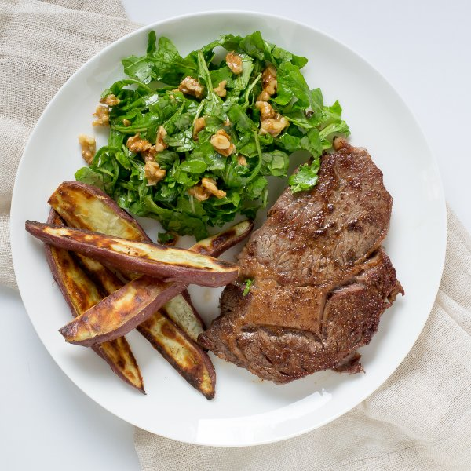

Ribeye Steak with Sweet Potato Wedges & Arugula-Walnut Salad

Nutrition (per serving)
741.5 kcalCalories
36 gProtein
26.6 gCarbs
56 gFat
Full nutrition table
| Calories | 741.5 kcal |
| Total fat | 56 g |
| Saturated fat | 20 g |
| Trans fat | 2.1 g |
| Cholesterol | 115.7 mg |
| Sodium | 159 mg |
| Carbohydrates | 26.6 g |
| Fiber | 4.9 g |
| Sugars | 6.2 g |
| Protein | 36 g |
| Potassium | 953.9 mg |
| Calcium | 120.4 mg |
| Iron | 4.8 mg |
| Vitamin A | 16124.7 IU |
| Vitamin C | 8.3 mg |
| Vitamin D | 10.2 IU |
Cookware
Ingredients
- 1 (5 oz) pkgbaby arugula
- 1 ½ lbribeye steak
- 1 lbsweet potato
- ½ cupwalnuts
- balsamic vinegar
- black pepper
- Dijon mustard
- extra virgin olive oil
- salt
- virgin coconut oil
Steps
- Preheat the oven to 500°F and place the rack in the center position. Place a baking sheet in the oven to warm up.
- Wash and dry the fresh produce. (Skip the arugula if it came pre-washed.)1 (5 oz) pkg baby arugula
1 lb sweet potatoes - Cut the sweet potatoes into ½-inch-thick wedges (about 8 to 10 wedges per potato). Remove the baking sheet from the oven and transfer the potatoes to it.
- Drizzle the potatoes with olive oil and season with salt and pepper; toss to coat, then spread out in a single layer.1 tbsp extra virgin olive oil
½ tsp salt
¼ tsp black pepper - Place the potatoes in the oven and bake for 10 minutes, then flip them over and continue to bake until they are tender, another 5 to 10 minutes.
- Preheat a skillet over medium-high heat.
- While the skillet heats up, pat dry the steak with paper towels and place on a plate. Season the steak generously with salt and pepper on both sides.1 ½ lb ribeye steak
1 tsp salt
½ tsp black pepper - Once the skillet is hot, add coconut oil and swirl to coat the bottom.1 tbsp virgin coconut oil
- Carefully place the steak in the skillet; flipping every 15 to 30 seconds, cook the steak until desired doneness (5 to 7 minutes for medium-rare). (Use a thermometer or cut into the steak to check the doneness.) Once done, transfer the steak to a plate and let it rest for 5 to 10 minutes.
- Once the steak is done, in a salad bowl, combine and whisk together olive oil, balsamic vinegar, and Dijon.2 tbsp extra virgin olive oil
2 tsp balsamic vinegar
½ tsp Dijon mustard - Roughly chop the walnuts and add to the salad bowl.½ cup walnuts
- Add the arugula to the salad bowl and toss to coat.
- To serve, arrange the steak, sweet potato wedges, and the arugula-walnut salad on a plate. Enjoy!